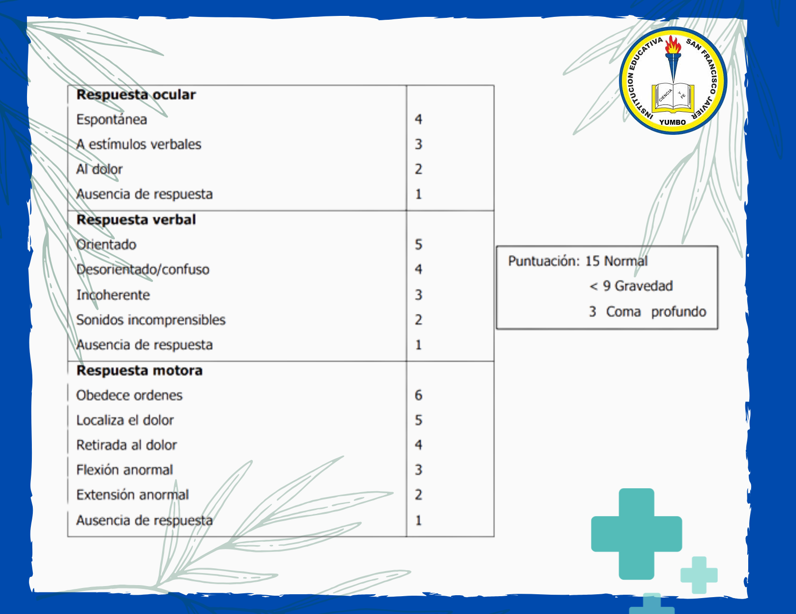
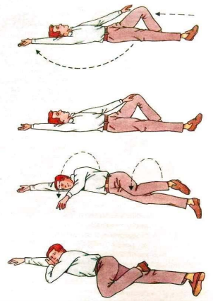

Atención
El coma de Glasgow
La escala de coma de Glasgow es una valoración del nivel de conciencia consistente en la evaluación de tres criterios de observación clínica: la respuesta ocular, la respuesta verbal y la respuesta motora. Cada uno de estos criterios se evalúa mediante una subescala. Cada respuesta se puntúa con un número, siendo cada una de las subescalas evaluadas independientemente. En esta escala el estado de conciencia se determina sumando los números que corresponden a las respuestas del paciente en cada subescala.

En el siguiente video puedes observar como evalúan cada uno de los criterios con su respectiva subescala:
Posición lateral de seguridad

La posición lateral de seguridad (PLS) es una técnica de primeros auxilios que se utiliza cuando una persona está inconsciente, pero respira. Se usa para evitar que se atragante o aspire vómitos
TÉCNICA:
• Con el accidentado boca arriba, extender el brazo más cercano a nosotros y colocarlo flexionado en 90º.
• Flexionar la pierna más alejada.
• Girar al accidentado suavemente empujándolo del hombro y la rodilla más alejados a nosotros
• Recoger el brazo que gira externamente para darle dos puntos de soporte (rodilla y brazo).